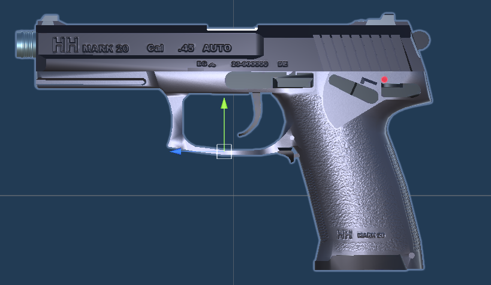
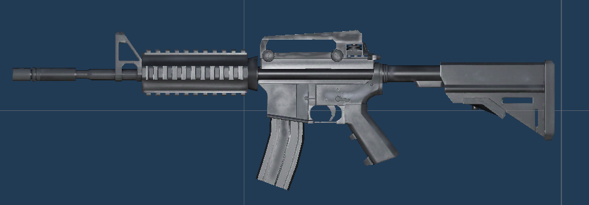
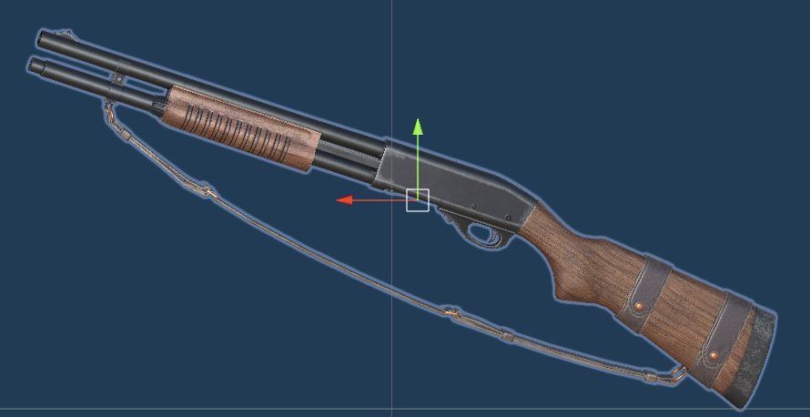
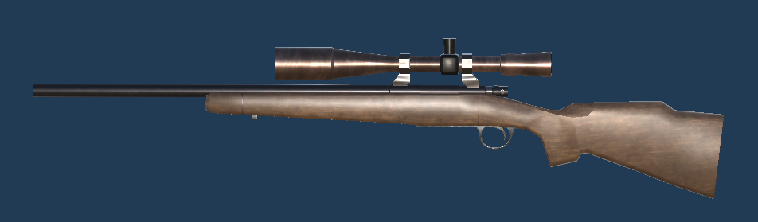
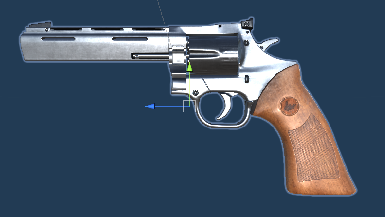
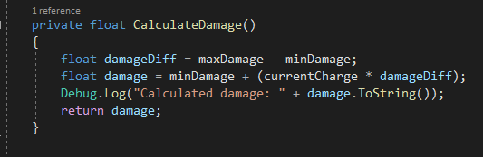
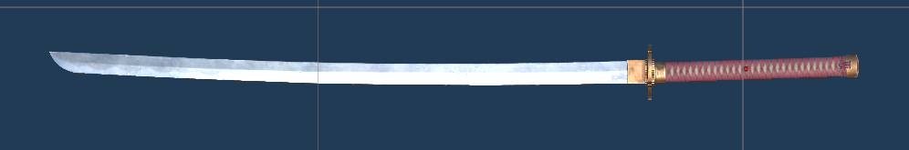

Unreal Engine: Portals

Portals is a 3D First-Person-Shooter puzzle game and a mini copy of Valve’s Portal game. It is set in a research facility consisting of multiple test chambers, the user has to pass through by solving puzzles. To solve these puzzles the user has a Portal Gun at their disposal, which lets them create two portals through which objects and the Player themselves can be sent. I re-created 3 Levels of Valve’s Portal in Unreal Engine during a practical course in my studies. I made all the 3D models myself.


Portal Mechanics
Speedy thing goes in, speedy thing comes out.
In Portal Test Chamber 10
-
Portals can only be spawned on Portal-Spawnable Surfaces
-
When the Player or a teleportable object enters the source portal, they have to come out of the destination portal.
-
Portals work like windows: You can see through one portal and see what’s in front of the other portal.
-
The relative location of the object exiting the destination portal matches the relative location at which the object entered the source portal.
-
The momentum and relative direction of objects entering the source portal is retained when exiting the destination portal.
-
Spawned portals always have to be positioned upright in relation to the Player’s position, so they can pass through them unhindered.
-
When something enters a portal vertically (e.g. the Player jumping or falling), the vertical momentum is re-directed towards the direction the destination portal is facing, allowing the Player to use their momentum to perform large jumps.


Game Elements

The game deploys multiple game elements, the user can interact with in order to solve a puzzle:
- Portals
-
A Portal is a construct created by the Portal Gun. Portals are used to teleport the Player and specific teleportable objects from one location to another. They can only be created on Portal-Spawnable Surfaces. See Portal Mechanics for more info.

- Portal Gun
-
The Portal Gun allows the Player to create Portals on specific Portal-Spawnable-Surfaces. The Player can only create portals on these surfaces.
- Portal-Spawnable Surface
-
A Portal-Spawnable Surface is a surface that allows the Player to spawn Portals on.

- Weighted Cube
-
The Weighted Cube is used to activate Super Buttons and Cube Buttons. It is spawned by a Cube Dropper. A Weighted Cube that is set on a Super Button, and thus activating it, changes color from blue to yellow.

- Cube Dropper
-
A Cube Dropper can spawn either Weighted Cubes or Reflective Cubes. It is activated by a Pedestal Button or when the spawned Cube has been destroyed by, for example, Toxic Water.


- Energy Ball
-
An Energy Ball is emitted from a source and has to be directed into a target using Portals.


- Disintegrator
-
A Disintegrator is a field that destroys objects such as the Weighted Cube and the Reflective Cube. The Player can pass the Disintegrator unhindered, but their portals will disappear. Disintegrators can be disabled by, for example, pressing a Pedestal Button, Super Button, or by activating a Laser Target.

- Lift
-
Lifts move the player vertically, activated by a Pedestal Button nearby or automatically when the Player steps on them.

- Moving Platform
-
Moving Platforms move on a straight line. They can be activated by the player stepping on them, or by a Pedestal Button or Super Button. Moving Platforms can either move only once when triggered or in a loop with a specified time interval.

- Light Bridge
-
A Light Bridge is emitted by a Light Bridge Base into a specified direction. It is made of a translucent hard surface the Player can walk on and objects can be placed on. It can be teleported through Portals.

- Laser Barrier
-
Laser Barriers are used to stop the player from going where he is not yet supposed to go. Objects cannot pass the barrier either. It is a similar mechanism like the Security Door, but takes up less space and the player can see through them.

- Excursion Funnel
-
The Excursion Funnel removes gravity and pushes the Player and objects that enter it into a direction with a certain speed. The direction of the Excursion Funnel can be reversed by triggers such as Pedestal Buttons or Super Buttons.


- Laser Source
-
A Laser Source emits a Laser.

- Laser Target
-
The Laser Target awaits a Laser. As soon as a Laser hits one or multiple Laser Targets, the puzzle is regarded as solved. A Laser Target can either be pass-through or solid. Pass-through targets let the Laser that hits them pass through unhindered. Solid targets stop the laser. An activated Laser Target changes color from red to yellow.

- Laser
-
A Laser is emitted by its source in a straight line and stops as soon as it hits an object. The Player tries to re-direct the laser into one or multiple Laser Targets to solve a puzzle.
- Reflective Cube
-
A Reflective Cube can be used to redirect a Laser into its Laser Target.

- Catapult
-
A Catapult catapults the player and physics objects through the air. It can catapult in any direction and can be mounted either on the floor or walls.

- Security Door
-
Security Doors can be used as normal doors or to keep the player from leaving a puzzle room without solving the puzzle. The door has to states: Locked and unlocked indicated by red and green lights above the door.
Security Doors can be unlocked either by a trigger (e.g. a Super Button) or when the puzzle has been solved.
- Toxic Water
-
Toxic Water kills the Player instantly. Toxic Water also disintegrates objects such as the Weighted Cube.

Teleportable Objects
-
The Player
-
Every Physics Object

Unity: Just Another Zombie Shooter
Just Another Zombie Shooter (JAZS) is a straight-forward first-person zombie shooter. It is inspired by games like the original Resident Evil series (0-4), Dead Island, and Left 4 Dead.
Goal Of The Game
In the current iteration of the game, the goal is to kill all zombies in the level. It’s that simple. The player can pick up different weapons, each with their own characteristics, advantages, and disadvantages. The player is equipped with a flashlight, whose batteries need to be replaced by new ones, which can be picked up in the levels. Other pickups include different types of ammo and health.
The Map

The map resembles an abandoned industrial area at an unkown location.
The initial idea was for it to be a night-map, but later on it’s been decided to implement a rudimentary day-night-cycle by animating the sun’s light intensity over time.
The DayNightCycle.cs class provides settings for StartBrightness, EndBrightness and Speed to control the day-night-cycle.

The HUD
| (1) Flashlight |
A progress bar showing the current battery level of the flashlight. |
| (2) Health |
The current health of the player. |
| (3) CCW Charging |
A progress bar displaying the charging level of the equipped Close Combat Weapon. |
| (4) Weapon Switching |
A progress bar displaying the duration of weapon switching (currently not visible). |
| (5) Ammo |
The available ammo in the Ammo Bag for the caliber of the currently selected weapon. Does not include ammo loaded into a weapon. |
| (6) Message Box |
A message box pop-up. E.g. used for informing the player of picked up items. |
| (7) Damage Indicator |
Flashes when the player receives damage. |
Weapon System
A lot of care went into the development of the weapon system.
Initially it was only meant to include firearms, but later on Close Combat Weapons (CCWs) have been added as well to allow for a more diverse gameplay and to give the player more options in regards to how to complete the levels.
Close Combat Weapons are weapons the player can only deploy in close range.
They have condition and decayRate attributes (among others) defining how good of a shape they are in and when they will break and subsequently be unusable.
A weapon needs to be picked up first to be added to the inventory, for example from a Supply Crate.
Whether or not a weapon is in the inventory is determined by its available boolean attribute.
Switching weapons can take a long time depending on how unwieldy the gun ist. Every weapon has a drawTime (the time it takes to draw the weapon) and a holsterTime (the time it takes to put the weapon away). The sum of the holsterTime of the current weapon and the drawTime of the next weapon make up the total time it takes to switch weapons (see SwitchWeapon code).
A progress bar (see The HUD) is displayed to visualize the progress, because adding these animations wasn’t possible in the current version of the game due to time constraints.
Guns
The game provides a variety of firearms to fight off zombies. Each firearm has its own advantages and disadvantages. For example: Pistols are quicker to draw and holster than rifles. Rifles for which every round has to be inserted individually (single round reload), such as the M40 and the Shotgun need a much longer time to reload fully, but make up for it with other strengths, such as higher damage or range. Guns and their ammunition can be picked up from Crates.
Switching weapons and reloading is meant to take a long time forcing the player to make wiser decisions in regards to avoiding the enemy, managing ammo, and making use of Close Combat Weapons.

| Weapon | Mk23 | M4A1 | Shotgun | M40A3 | Magnum |
|---|---|---|---|---|---|
Image |
 |
 |
 |
 |
 |
Range |
200 |
1000 |
400 |
5000 |
400 |
Draw Time |
0.5 |
0.5 |
1.3 |
1.4 |
0.7 |
Holster Time |
0.2 |
1 |
1 |
1.2 |
0.7 |
Damage |
10 |
20 |
50 |
40 |
100 |
Ammo Type |
.45 ACP |
5.56mm |
12 Gauge |
7.62mm |
.357 Magnum |
Magazine Capacity |
12 |
30 |
6 |
5 |
6 |
Reload Time |
1.6 |
2.5 |
1 |
1 |
7.1 |
Time Between Shots |
0.2 |
0.2 |
1.1 |
1.91 |
0.9 |
Has Zoom |
No |
No |
No |
Yes |
No |
Single Round Reload |
No |
No |
Yes |
Yes |
No |
Weapon Caliber
Guns are categorized by their caliber.
The game is not restricted to a one-to-one mapping of calibers.
Ammunition of a certain caliber can be used for any weapon firing that caliber, though currently the game has only one weapon available for every caliber.
But in theory, you could have a .45 ACP Colt 1911 with a capacity of 7 rounds as well as a .45 ACP Glock 21 with a capacity of 13 rounds.
When picking up any .45 ACP ammo, the player can choose which gun they want to use it with.
Another example would be the 7.62mm round, usable for the AK-47 as well as the M40 bolt action rifle. The player can choose to use the ammo for medium to close ranges with the AK-47 or for long ranges taking advantage of the M40’s scope.
Ammo System
All ammo that is being picked up, is stored in the Ammo Bag. It has slots for every caliber (see Ammo Bag attributes). A reload takes the ammo necessary to fill up the current magazine out of the Ammo Bag and puts it into the magazine. That means, the Ammo Bag only contains ammo that is currently not assigned to a magazine. This way, collisions are avoided when multiple weapons of the same caliber would try to access the shared ammo pool.

The HUD only displays the ammo in the Ammo Bag (see The HUD). There is no display for the ammo left in the magazine. The player has to guess for themselves when the best time is to reload.
Shotguns and bolt action rifles have a "single round reload", meaning they can only be reloaded one bullet at a time. Pressing the Reload key (default R) reloads one round.
By holding the key down the player can keep reloading rounds until the gun is fully loaded (see ReloadSingleRound() code).
This feature introduced additional problems creating the reload animations, which had to be fixed.
Single round reloads are especially slow. Guns that have this restriction need to make up for it in another way.
In the case of the Shotgun it is in damage and in the case of the M40 it is in damage, high range, and the scope.
Close Combat Weapons
Close Combat Weapons (CCWs) are weapons that can only be used in close range to the enemy, exposing the player to enemy attacks. CCWs give the user more variety in how they solve the tasks in each level and how they attack enemies. Since ammo is rare and precious in this game, CCWs need to exist as a fallback option when the player runs out of ammo or if they want to conserve their ammo for more dire situations.
Weapon Deterioration
CCWs can come in different conditions (represented as a float between 0.0 and 1.0), ranging from destroyed (condition 0.0) over used to brand new (condition 1.0).
A CCW with a condition of 0.0 is regarded as broken and will be removed from the inventory of the player.
The weapon is no longer usable and no longer available to the player.
To use that weapon again, it has to be picked up again, for example from a Crate.
The rate with which a weapon’s condition deteriorates is determined by the chargingLevel it is used with and the decayRate for that weapon.
The decayRate determines how fast a weapon’s condition deteriorates with every hit.
The chargingLevel with which the weapon is used also plays a role in the deterioration of the CCW.
The harder the player hits, the faster the weapon deteriorates.
See Close Combat Weapons attributes for a full list of CCW attributes.
Weapon Charging
CCWs can be charged by pressing and holding the left mouse button to increase damage.
The attack is executed when the mouse button is released.
The current charging level is displayed in the Charging Progress Bar (see HUD).
A CCWs has a minDamage attribute and a maxDamage attribute. A hit without charging results in minDamage.
A hit fully charged results in maxDamage. Any values in between are calculated accordingly based on the charging level (see CalculateDamage() code).
The chargeRate determines the time it takes to fully charge the weapon to deal maximum damage (see Close Combat Weapons attributes).


| Weapon | Baseball Bat | Katana |
|---|---|---|
Image |
|
 |
Range |
1.67 |
2 |
Draw Time |
0.5 |
0.5 |
Holster Time |
0.2 |
1 |
Time Between Attacks |
1 |
0.5 |
Charge Rate |
0.6 |
1.5 |
Min Damage |
10 |
34 |
Max Damage |
20 |
80 |
Condition |
varying |
varying |
Decay Rate |
0.3 |
0.1 |

Pickup System
Crates
Crates can contain all items that can be picked up by the player.
Those currently include:
-
Weapons (Guns and Close Combat Weapons)
-
Ammo of all calibers
-
Health
-
Batteries
An example of how a Crate is displayed in the inspector can be seen in Attributes of a Supply Crate.

There are currently 3 (or rather 4) types of Crates:
Image |
Name |
Description |
|
Supply Crate |
Contains all kinds of pickups |
|
Ammo Crate |
Contains weapons and ammunition |
|
First Aid Crate |
Contains health |
|
First Aid Kit |
Contains health (technically not a Crate) |


{kind=link}
Blender: TIE-Fighter Advertisement

During a practical course at university, I created an "advertisement" for the TIE-Fighter in Blender.
My job consisted of:
-
Idea & Concept
-
Layout
-
Animatic
-
PreViz
-
TIE-Fighter modelling & texturing
-
Hangar modelling & texturing
-
Lighting
-
Animation
-
Motion Graphics
-
Video Editing


.jpg)

Comic Manager 7

The Comic Manager, currently in Version 7, is a program I wrote in my free time to manage my comic book collection.
It has been in development for over 10 years now.
It connects to the Comic Vine API and downloads all relevant data of your comics such as: Cover, Writer, Artist, Release Date, Characters etc..
You can also set up a shopping list and automatic pull list.
A Comic Manager App will hopefully come one day, once time allows.
Tech stack: Java, JavaFX, Swing, SQL, JSON, REST-APIs, XML


A partial list of features:
-
Collection
-
Shopping List
-
Pull List
-
Manage Art Prints
-
Custom Lists
-
Tags
-
Variants
-
Local File Links
-
Online Links
-
Favourites
-
Comic Box Management
-
Sales List
-
Reading Orders
-
Mark Comics with:
-
Background color
-
Border color
-
Marker
-
Flag
-
Dot
-
Tags
-
Bookmarks
-
-
Signed Comics
-
Reading Suggestions
-
Track references between comics
-
Show comics from a specific Writer, Artist, Publisher etc.
-
Manage trades/graphic novels and their contents
-
General Reminders
-
Digital Copy Code Expiration Reminders
Collection View Options


User Defined Attributes

The user can create as many User Defined Attributes (UDA) as they like in as many tabs as they like.
UDAs support the following input types:
-
Combo Box
-
Check Box Table
-
Text Field
-
Text Area
-
List
-
Date
-
Integer
-
Decimal
More Features


Features Overview
An overview of the menus and features of Comic Manager 7.


Automatic Video Converter ARC

The Automatic RIP Converter (ARC) converts video files with as little user interaction as possible. It automatically detects the resolution of the video and, based on that, chooses the correct conversion quality. Interlaced video can be automatically detected and de-interlaced. Audio tracks will be automatically named after language and channel layout. E.g. "English 5.1", "German stereo". Subtitle tracks will be named after their language. Tech stack: Python, ffmpeg, ffprobe, MKVPropEdit, JSON
Watch Mode
You can use the Watch Mode and specify a folder to watch. All files in that folder are being converted. If the contents of the folder change, the new files and folders are converted as well. This mode supports directory settings files.
Directory Settings files
Note that directory settings files are only supported in Watch mode (--watch).
Directory settings files ("dirsets") have the extension .ds.json and are stored in the dirsets folder.
They specify the conversion settings that should be used for a certain folder.
Dirset files are stored centrally in the dirsets directory.
A dirset reference file (.dsr extension) points the program to the dirset to use for the directory the reference file resides in.
The dirset reference has to have the same name as the dirset file it is referencing.
conversion folder: ARC dirset folder:
Series japanese.ds.json
Jackie Chan chinese.dsr ----------> Jackie Chan chinese.ds.json
Movies HD audio.ds.json


You can specify a different settings file for every directory.
These files update and change the program’s startup settings only for that specific directory
and its subdirectories.
Dirset settings override the settings.json file.
They go top-down, never bottom-up. Directories above a dirset file are unaffected by it.
Not all properties need to be present in a dirset file.
Any properties that are missing are defined by the settings active in the parent folder.
Track Selection Language (TSL)
The ARC track selection language (TSL) determines how audio tracks will be selected automatically. It uses the ISO-639-2 and ISO-639-1 naming abbreviation (e.g. "eng", "ita").
Here’s a simple TSL example:
"audio_track_selection_rule" : [
"+lang(und, ger, eng) & codec(hd, sd) & layout(highest)",
"+lang(und, ger, eng) & codec(sd) & layout(stereo)"
]
Every line in the track selection language is a selection step the program takes:
+lang(und, ger, eng) & codec(hd, sd) & layout(highest)
Means:
Select (+) all tracks fulfilling all (&) of the following conditions:
-
Language one of the following: und, ger, eng
-
Codec one of the following: hd, sd
-
Channel layout: Highest layout available (layout with the most channels)
After fulfilling that statement, the program executes the next statement:
+lang(und, ger, eng) & codec(sd) & layout(stereo)
And adds the selected tracks to the already selected tracks.
You can also tell the program to deselect tracks using a - instead of a +:
-lang(eng) & codec(sd) & layout(stereo)
A more complex example:
"audio_track_selection_rule" : [
"+lang(und) & codec(hd) & layout(highest)",
"+lang(eng) & codec(hd) & layout(highest) | lang(prev) & codec(sd) & layout(highest)",
"+lang(und, ger, eng) & codec(sd) & layout(stereo)"
]
This snippet tells the program to:
-
Select the "undefined" HD track with the most channels
-
Select tracks in english HD with the highest channels
If that is not available, select the highest SD track of the same language -
Add all SD stereo tracks with either: und, ger, eng
Here’s a quick documentation of the TSL:
Track selection commands:
['lang', 'codec', 'layout']
Operators:
['+', '-', '&', '|', ',', '!']
+: ADD track
-: REMOVE track
&: Combines conditions with AND (all of them need to be true)
,: Combines conditions with OR (only one of them needs to be true)
|: The next statement is an ALTERNATIVE to the previous statement and is executed if the previous statement hasn’t been evaluated to true.
!: NEGATION of a statement
Values:
Special Values:
prev: Selects the value from the previous statement that has not been evaluated to true.
any: Accepts any value
Languages:
['any', 'prev', 'chi', 'eng', 'fre', 'ger', 'ita', 'jap', 'kor', 'spa', 'und']
Codecs:
['any', 'prev', 'hd', 'sd', 'ac3', 'eac3', 'truehd', 'dts', 'dtshd', 'pcm', 'mp2']
Channel Layouts:
['any', 'prev', 'surround', 'non-surround', 'highest', 'lowest', '7.1', '6.1', '5.1', '4.0', 'stereo', 'mono']
conversion folder
-> Chinese
* Movies chinese audio.dsr
-> Jackie Chan
* Movies chinese and english audio.dsr
-> Series SD audio
* Series SD audio.dsr
-> Movies english HD audio
* Movies english HD audio.dsr
Meister aller Klassen_t02 snippet.mkv 00:02:00 Extra 1920x1080 progressive Audio Sel Ind Lang Codec Layout Old Title New Title ----------------------------------------------------------------------------------------- [ ] 0 deu dtshd ma 5.1 Surround 5.1 German 5.1 [DTSHD MA] [x] 1 deu dts 5.1 Surround 5.1 German 5.1 [DTS] [ ] 2 zho dtshd ma 5.1 Surround 5.1 Chinese 5.1 [DTSHD MA] [x] 3 zho dts 5.1 Surround 5.1 Chinese 5.1 [DTS] [ ] 4 zho dtshd ma Stereo Stereo Chinese Stereo [DTSHD MA] [x] 5 zho dts Stereo Stereo Chinese Stereo [DTS] [x] 6 eng dts Stereo Stereo English Stereo [DTS] Subtitles: Sel Index Language Old Title New Title --------------------------------------------------------- [x] 0 deu Undetermined German [x] 1 deu Undetermined German
Scripting in Maya & Blender
Here are a few small scripts I wrote for Maya and Blender:
Blender
I wrote a Python script that allows the user to batch render a scene multiple times with different settings (e.g. Active camera, render range, render settings etc.). The plan is to turn it into a full batch network rendering script. Currently, it only works on the local machine with one scene file. Keep in mind that this is the very first version of the script. So, it’s still in beta.
The render settings are defined in a text file:

Supported settings:
-
Camera
-
Start Frame
-
End Fame
-
Rendering Engine
-
Computing Device (CPU, GPU)
-
OpenGLRender (Viewport animation)
-
Width
-
Height
-
Percentage of resolution
-
FPS
-
Samples
-
Add file extension
-
Output file path
-
Format
-
Overwrite existing files
-
Compression
Soon-to-be-supported:
-
IP address
-
Blend files specific to every job
Maya
I wrote a Python script that allows the user to randomly animate any attribute of an object in certain intervals and strengths. The script creates keyframes that can later on be tweaked. I used it to create the flickering light in my Half-Life 3 trailer.